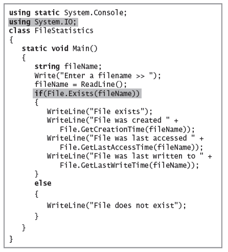
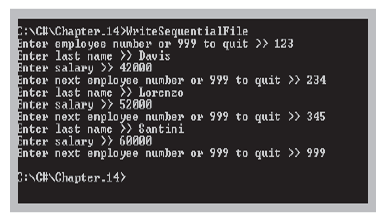
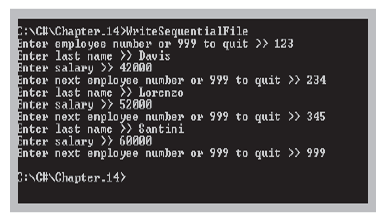

C# - I/O Files, Directory and Streams

Instructor: Chris Fulton
Learning Objectives
- Brief overview of
System.IO Namespace - Evaluating the File and Directory classes
- Understanding file data organization
- Understanding streams
- Write to and read from a sequential access text file
- Search a sequential access text file
- Understand serialization and deserialization
Overview of System.IO Namespace
The System.IO namespace contains types that allow reading and writing to files and data streams, and types that provide basic file and directory support.
File and Directory Classes
- C# provides built-in classes named File and Directory
- Contain methods to help you manipulate files and their directories
- Access information about files
- Create, delete or move files
- Your file structure must be transferable
- Use relative paths to indicate file locations
File Class- Contians methods to access information about files
Directory Class- Provides information about directories or folders
Common Methods in File Class

File Class - code and output

Common Methods in Directory Class

Directory Class - code and output


Understanding File Data Organization
- Businesses store data in a relationship known as the data hierarchy
- Character
- Any of the letters, numbers, or other special symbols (such as punctuation marks) that comprise data
- Characters are made up of bytes containing eight (8) bits
- ASCII characters contain one (1) byte
- Unicode characters contain two (2) bytes
Understanding File Data Organization Diagram

Understanding File Data Organization
- Field
- A character or group of characters that has some meaning
- Record
- A collection of related fields that contain data about an entity
- Characters are made up of bytes containing eight (8) bits
- Sequential access file
- Each record is read in order based on its relative position
- Records can be stored in order based on a value in the record
- The field used to uniquely identify each record in a sequential file is the key field
- Random access file
- Records are not in any sequence and can be accessed in any order
Understanding File Data Organization cont.
- A C# application opens a file by creating an object and associating a stream of bytes with that object
- When you finish using a file, the program should close the file
- Not closing a file may make it inaccessible
- Not closing an output file can result in data not being written to the file
Understanding Streams
- Stream
- Stream is a class that simulates a stream of bytes to be lined up in a row. Such as the transmission of data on the network, data transmited are contiguous stream of bytes from the first byte to the last byte.
- Functions as a pipeline or channel between an input device and an application, and potentially an output device
Stream Overview

Stream classes
- Stream is an abstract class, it can not initialize an object by itself, you can initialize a Stream object from the Constructors of the subclass. Stream class provides the basic methods of working with data streams, namely the method of read/write a byte or an array of bytes.
- Click here to navigte to
Stream Class
| Class | Description |
| BufferedStream | A utility stream, it wrapped another stream, which helps improve performance |
| FileStream | Stream used to read and write data to the file. |
| MemoryStream | Creates a stream whose backing store is memory. |
| UnmanagedMemoryStream | |
| IsolatedStorageFileStream | |
| PipeStream | |
| NetworkStream | |
| CryptoStream | Defines a stream that links data streams to cryptographic transformations. |
| DeflateStream | |
| GZipStream |
Properties of Stream
- Depending on the stream, there are the stream that supports both read and write, and seek by moving the cursor on the stream, read and write data at the cursor position.
| Attribute | Description |
| CanRead | Gets a value indicating whether the current stream supports reading. |
| CanSeek | Gets a value indicating whether the current stream supports seeking. |
| CanWrite | Gets a value indicating whether the current stream supports writing. |
| Length | Gets the length in bytes of the stream. |
| Position | Gets or sets the current position of this stream. |
Understanding Streams
- Most streams flow in only one direction
- File processing classes include:
StreamReaderfor text input from a fileStreamWriterfor text output to a fileFileStreamis used alone for bytes and with either StreamReader and StreamWriter for text, for either input from and output to a file
FileStream Class
- Filestream is a class which extends from the Stream class, FileStream is used to read and write data to file, it inherits the properties, methods of Stream, and has additional functions for reading and recording data on the file.
- Click here to navigte to
FileStream Class
FileStream Overloaded Constructor

FileMode Enumeration
- A constant that determines how to open or create the file
| FileMode | Description |
| Append | Opens the file if it exists and seeks to the end of the file, or creates a new file |
| Create | Specifies that the operating system should create a new file. If the file already exists, it will be overwritten. |
| CreateNew | Specifies that the operating system should create a new file.If the file already exists, an IOException exception is thrown. This mode requires FileIOPermissionAccess.Write permission. |
| Open | Specifies that the operating system should open an existing file. A System.IO.FileNotFoundException exception is thrown if the file does not exist. |
| OpenOrCreate | Specifies that the operating system should open a file if it exists; otherwise, a new file should be created |
| Truncate | Specifies that the operating system should open an existing file. When the file is opened, it should be truncated so that its size is zero bytes. |
FileAccess Enumeration
- A constant that determines how the file can be accessed by the FileStream object. This also determines the values returned by the CanRead and CanWrite properties of the FileStream object. CanSeek is true if path specifies a disk file.
| FileAccess | Description |
| Read | Data can be read from the file. |
| ReadWrite | Data can be read from and written to the file. |
| Write | Data can be written to the file. |
Stream Example


Writing and Reading a Sequential Access File
- C# uses files only as streams of bytes
- When you write a program to store a data file, you must dictate the form the file will take
- Whether you are writing data to a file or reading data from one, you create a
FileStreamobject
Writing Data to a Sequential Access Text File
- Token
- A block of text within a string that represents an entity or field
- Delimiter
- A character used to specify the boundary between records and, potentially, fields in text files
- When you write data to a text file:
- You can separate the fields with a delimiter
- Delimiters are needed when fields are not fixed in size and position - field size varies
- CSV files (comma-separated value files) are delimited files
Writing Data to Sequential Access Text File
 



Reading from a Sequential Access Text File